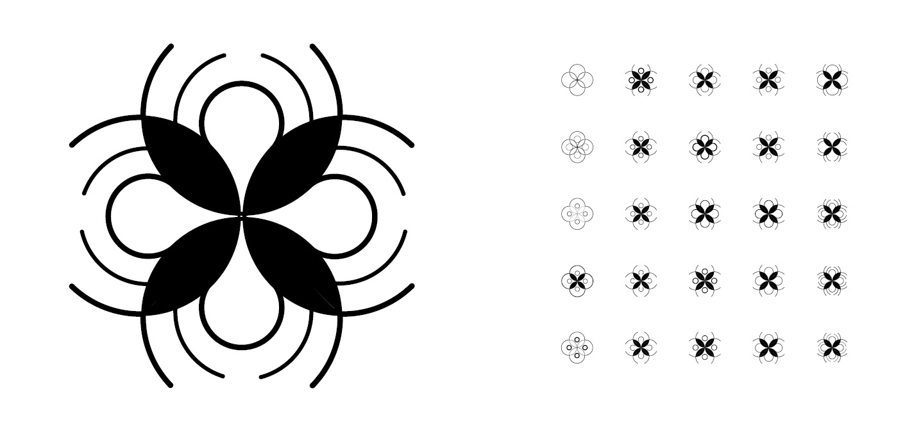

My process for creating this symbol began with very simple circles. Through changing small features each time, I was able to see what works and what doesn’t before slowly honing in on a specific design. After honing in on a specific design, I began to make really small adjustments to the size and weights of the circles before settling on my final design. For this final symbol, I chose the one that utilized circles in an interesting way and that could be utilized at various scales. Whether it is scaled larger for a poster or scaled smaller for a business card, this symbol is recognizable as part of a specific brand.